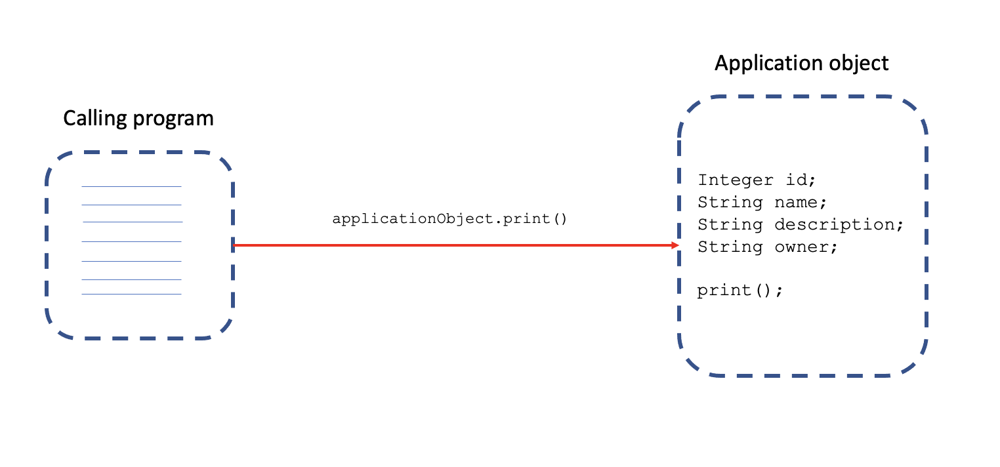

Data Transactions with Spring#
Transaction#
Multiple actions performed as a single group
ACID Transactions#
A (Atomicity): All or nothing (no partial).
C (Consistency): Committed (written) when all actions (in a transaction) are completed.
I (Isolation): Each transaction is isolated from other transactions, meaning uncorrupted data.
D (Durability): Cannot be deleted/undone by a system failure.
Transaction Types#
Global: Multiple resources manage the transaction. Usually managed by the web server.
Local: One resource manages the transaction. e.g., JDBC connection.
Spring Framework#
Consistent programming model across global and local transactions.
Spring Transaction management types#
Programmatic#
Custom code for transaction management.
Example:
public void saveTicket(Ticket ticket) {
Session session = SessionFactory.getCurrentSession();
session.getTransaction().begin(); //--
session.save(ticket); // | <=== transaction
session.getTransaction().end(); //--
}
Declarative#
Manages transaction using Spring-specific annotations.
Separates transaction management from business code.
Example:
@Transactional
public void scheduleRelease(Ticket ticket, Release release) {
ticketDao.saveTicket(ticket);
assignToRelease(ticket, release);
doOtherStuff(ticket);
}
Manages everything:
Begin
Suspend
Commit
Rollback
Transactional parameters
Transaction Managers#
Programmatic Transaction Management:
Transaction template: Similar to Spring templates like
JdbcTemplateand other available templates.Platform transaction manager: Handles transactions across Hibernate, JDBC, JPA, JMS, etc.
Spring Transaction Managers:
Platform transaction manager
JTA
Hibernate
DataSource
JPA
@Transactional annotation#
Proxy is created to hold transaction management code.
Annotation used at the class, interface or method level.
Transaction propagation is handled automatically.
NOTE: In Spring boot, it works without configuration.
Spring Configuration#
JPA Transaction Manager: Registers a transaction manager for us.
Additional configuration: Datasource, entity manager, repositories.
Spring Data Repositories.
Lifecycle and Scope#
Database Transaction#
@Transactional defines a single transaction, in the scope of a persistence context.
Persistence Context#
Defined in JPA
Handles a set of entities that contain data to be persisted.
How @Transactional works?#
Via proxies!
Without proxy implementation:

With Proxy implementation:

Proxy#
Transaction Interceptor: Intercepts method calls.
Platform transaction manager: Handles transactions.
Difference proxies in Spring (JPA?) transaction handling:
Persistence context proxy
Entity manager proxy
Transaction aspect
Transaction manager
Rollbacks#
Rollbacks will occur for RuntimeException or unchecked-exception only.
Use
@Transactional(rollbackFor=Exception.class)to state otherwise.Use
@Transactional(noRollbackFor=SpecificException.class)to avoid rollback on a specific exception.
Rollback will happen in case of:
Throw an exception from code.
Spring catches an unhandled exception.
Spring determines to mark the transaction for “rollback”.
NOTE:
To enable the transaction logging from Spring, set: logging.level.org.springframework.transaction.interceptor=TRACE
Transaction management code#
Configuration:
private final TransactionTemplate transactionTemplate;
// constructor
public ReleaseService(PlatformTransactionManager transactionManager) {
this.transactionTemplate = new TransactionTemplate(transactionManager);
this.transactionTemplate.setPropagationBehaviorName("PROPAGATION_REQUIRES_NEW");
this.transactionTemplate.setReadOnly(true);
}
A simple 2 step transaction with the above configuration:
transactionTemplate.execute(new TransactionCallbackWithoutResult() {
public void doInTransactionWithoutResult(TransactionStatus status) {
try {
} catch (NoSuchElementException exception) {
exception.printStackTrace();
status.setRollbackOnly();
}
}
});
Fine-grained control in programmatic transaction management, using platform transaction manager directly.
public Release scheduleRelease(Release release) {
TransactionDefinition transactionDefinition = new DefaultTransactionDefinition();
TransactionStatus transactionStatus = transactionManager.getTransaction(transactionDefinition);
try {
createTickets(release);
assignTicketsToRelease(release.getId(), release.getTickets());
transactionManager.commit(transactionStatus);
} catch (RuntimeException e) {
transactionManager.rollback(transactionStatus);
throw e;
}
return release;
}
Declarative transaction management (vs Programmatic)#
Manage transaction via configuration.
Separate transaction logic from business logic.
Easy to maintain.
Preferred when a lot of transaction logic.